Installation Reference
Installation Reference
Installation
Scanbot SDK is delivered as an embedded framework, containing all iOS supported 32 and 64 bit simulator and device architectures, bitcode and crash symbols.
ScanbotSDK can be used with Objective-C as well as with Swift.
It is available as a CocoaPod or as an embeddable framework for downloading here
For invoice, credit card recognition and text recognition additional data bundles are required in your project. You can include these bundles by adding them to your apps bundle.
Note: Scanbot SDK also contains a little script that prepares the framework and your app when archiving your app for App Store submission. It strips the unnecessary architectures from the frameworks binary, code signs the framework and adds the crash symbols (dSYM) file to your apps archive (Embeddable framework only!).
1. Installation using CocoaPods
CocoaPods is a dependency manager for Swift and Objective-C projects for macOS as well as for iOS. It integrates deeply into your Xcode project and manages the third-party components in your app.
- 1. If not already done, install CocoaPods on your Mac
- 2. Add pods to your Xcode project as described in this guide
- 3. Modify your podfile to include ScanbotSDK as described here
Open your podfile in Xcode or with any text editing app and add the following line:
pod 'ScanbotSDK'
Your podfile now should read like:
target 'SDKPodTest' do
use_frameworks!
pod 'ScanbotSDK'
end
Save the podfile and run the
$ pod install
command in your projects folder using the macOS Terminal.
Open your applications Xcode workspace (not the project file) and by now you should be able to use ScanbotSDK in your project.
1.1. Additional data bundles
For some ScanbotSDK features you will need additional data bundles as described above. Those bundles are contained in the pod but, by default, they are not added to your applications bundle.
To do so edit your podfile and add one or more of the following subspecs to the ScanbotSDK pod:
- For optical Text recognition: [OCR]
- For machine readable zone recognition: [MRZ]
- For credit card detection: [CC]
- For all features: [ALL]
Your podfile now should look like this:
target 'SDKPodTest' do
use_frameworks!
pod 'ScanbotSDK', :subspecs => ['OCR']
end
When using multiple subspecs:
target 'SDKPodTest' do
use_frameworks!
pod 'ScanbotSDK', :subspecs => ['OCR', 'MRZ', 'CC']
end
When using all subspecs:
target 'SDKPodTest' do
use_frameworks!
pod 'ScanbotSDK', :subspecs => ['ALL']
end
Whenever you change your podfile you must update the pods using the
$ pod update
command in your projects folder using the macOS Terminal.
Hint: Do not use subspecs if not needed, the additional bundles will enlarge your apps file size by a good amount.
Caution: CocoaPods version >= 1.5 is required to handle subspec-switching correctly.
2. Installation as an embeddable framework
Installing the Scanbot SDK embedded framework is really easy. Check out our pictured guide.
- 1. Copy ScanbotSDK folder into your apps project folder
- 2. Open your app project in Xcode
- 3. Select your apps build target and add an embedded framework
- 4. Select ‘Add Other…’
- 5. Locate and select ScanbotSDK.framework
- 6. Check ‘Copy items if needed’ and ‘Create groups’ and hit ‘Finish’
- 7. Add a runscript build phase that runs the strip-script and set the dSYM file as input file to this runscript phase
- 8. Optional: Add the data bundles for invoice and credit card recognition and/or the additional OCR languages to your project
- 9. Import the frameworks umbrella header in your source code files:
#import <ScanbotSDK/ScanbotSDK.h>
or
@import ScanbotSDK;
2.1. Step-by-step guide
Step 1 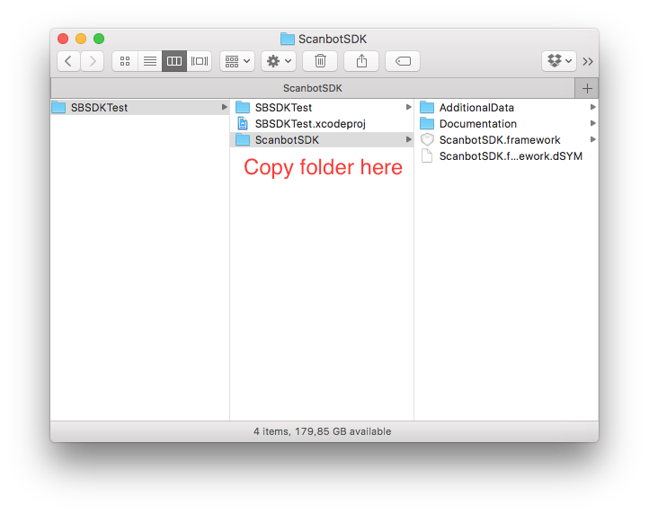
Step 2 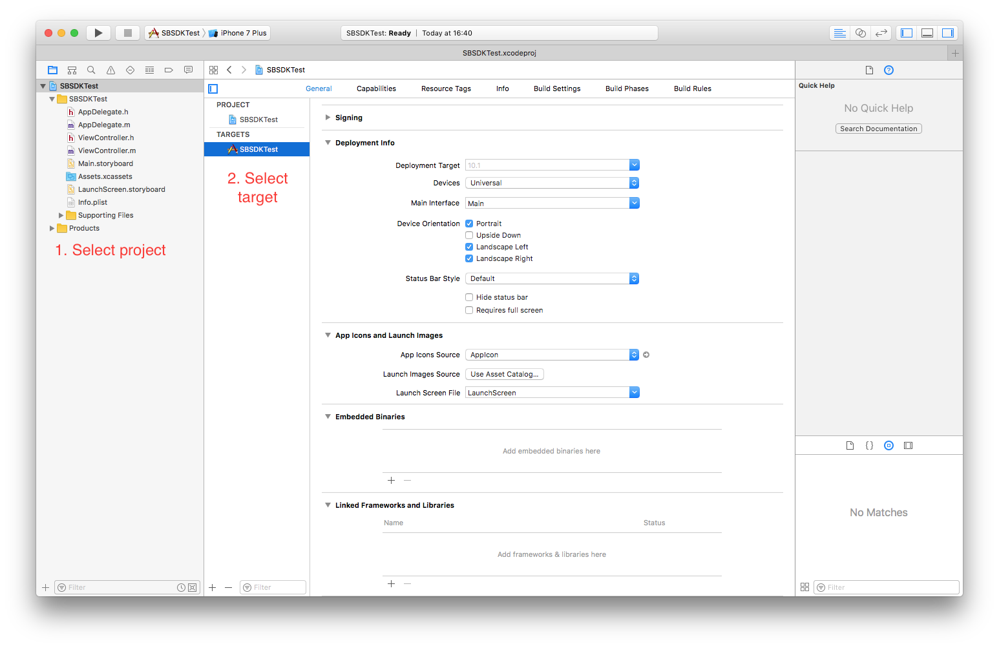
Step 3 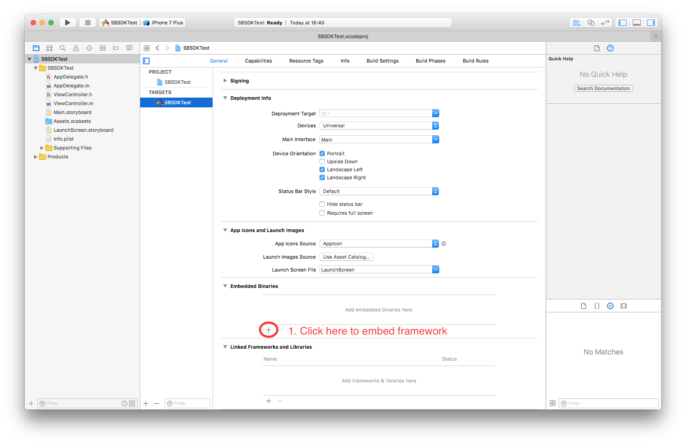
Step 4 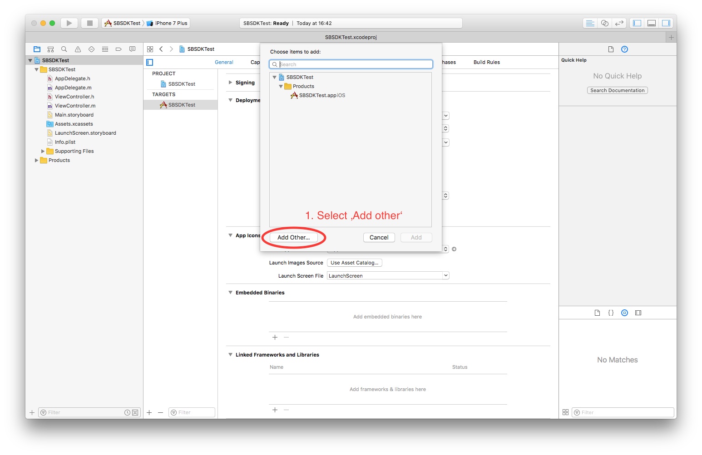
Step 5 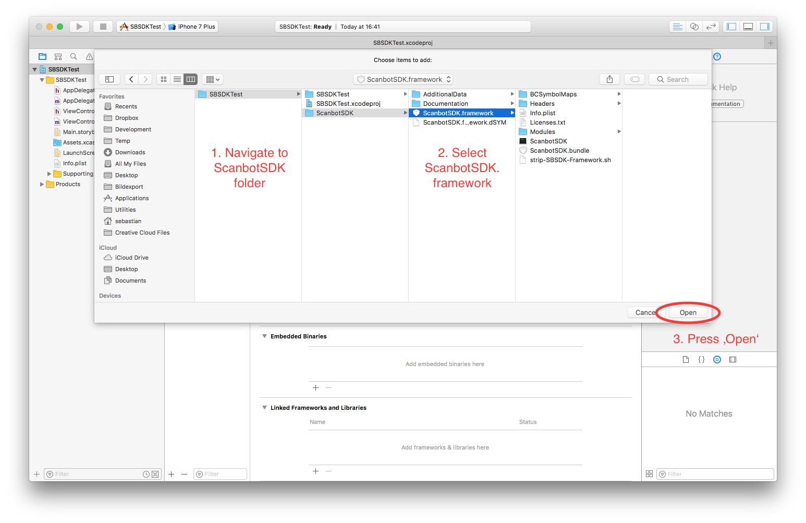
Step 6 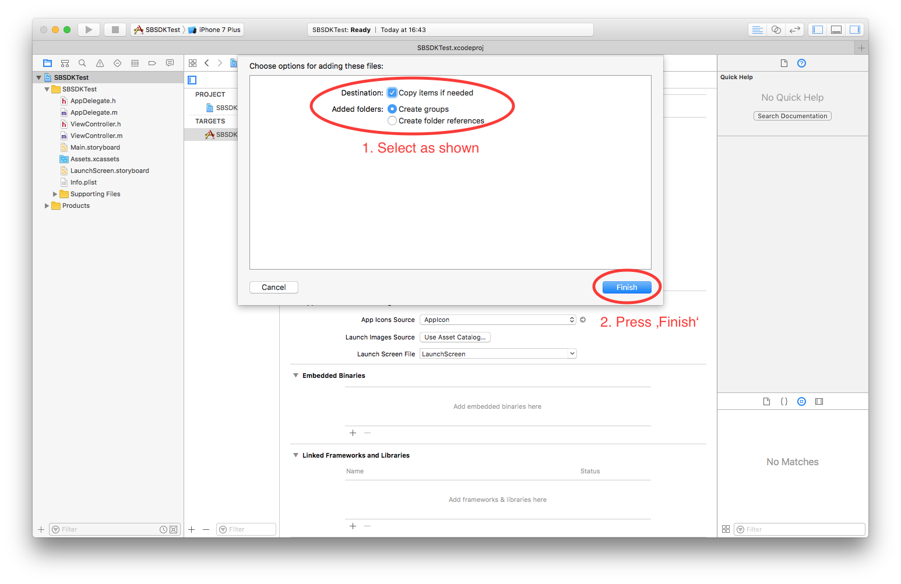
Step 7 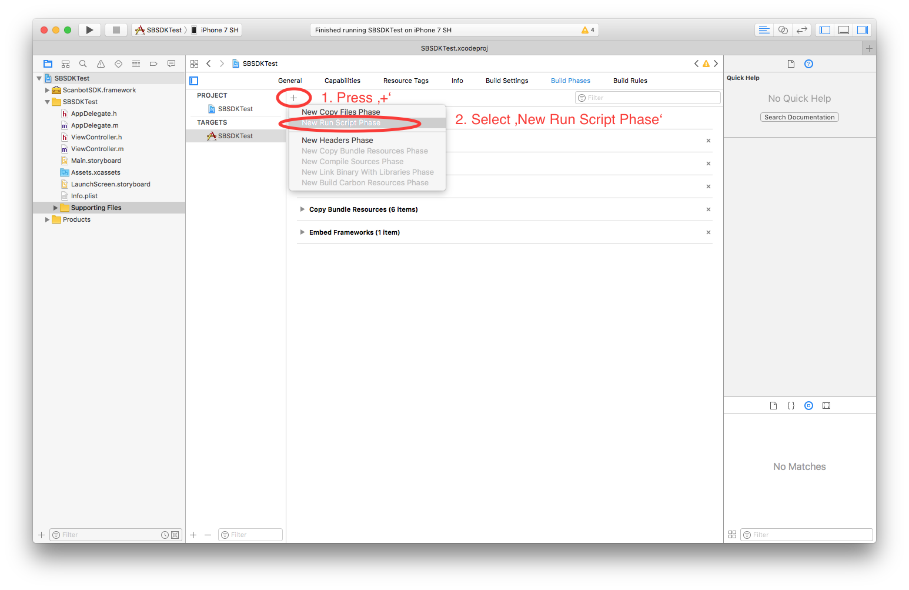
Step 8 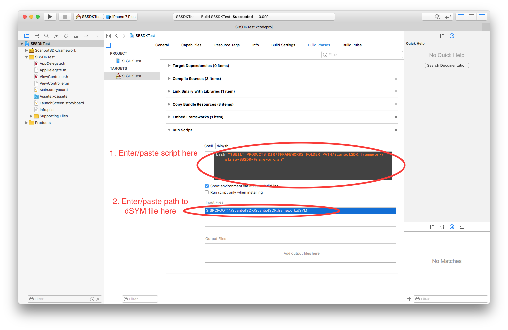
Script code:
bash "$BUILT_PRODUCTS_DIR/$FRAMEWORKS_FOLDER_PATH/ScanbotSDK.framework/strip-SBSDK-Framework.sh"
Script input file:
$(SRCROOT)/./ScanbotSDK/ScanbotSDK.framework.dSYM
Step 9 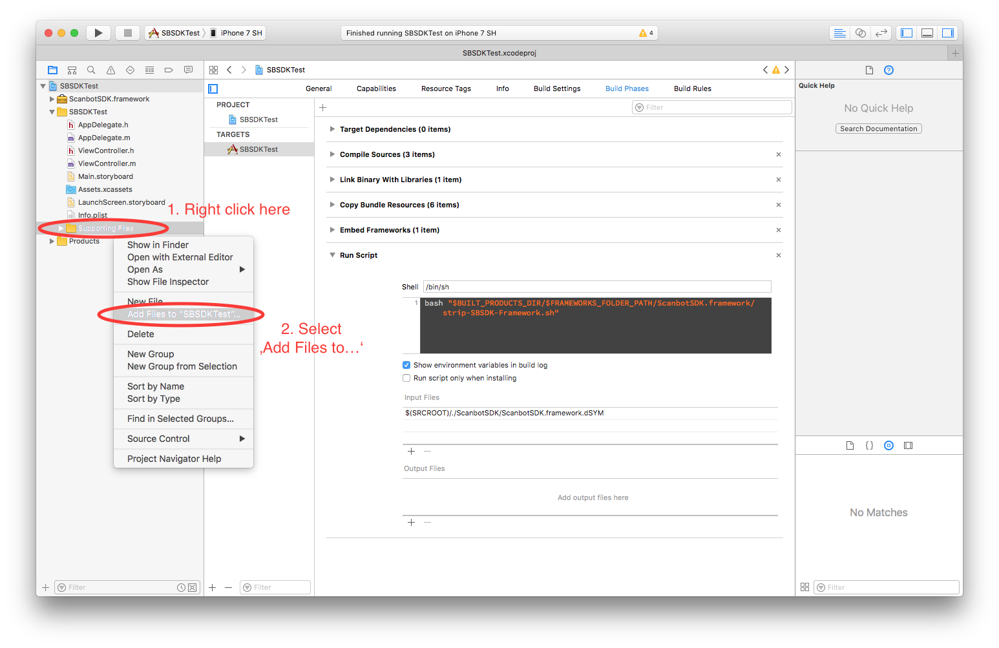 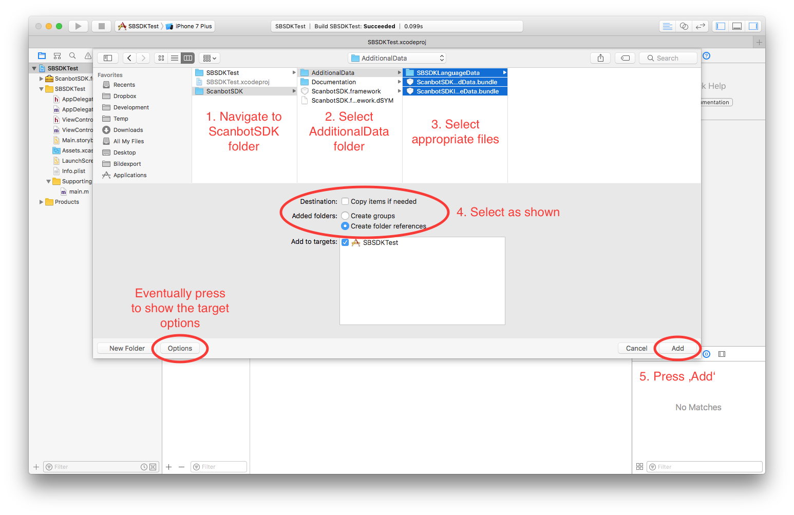 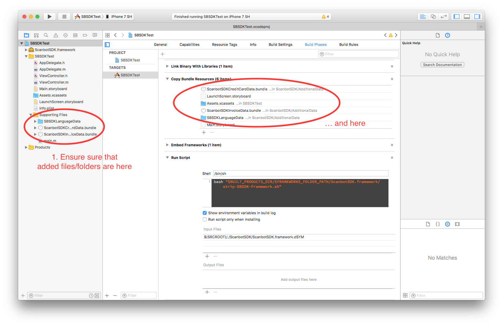